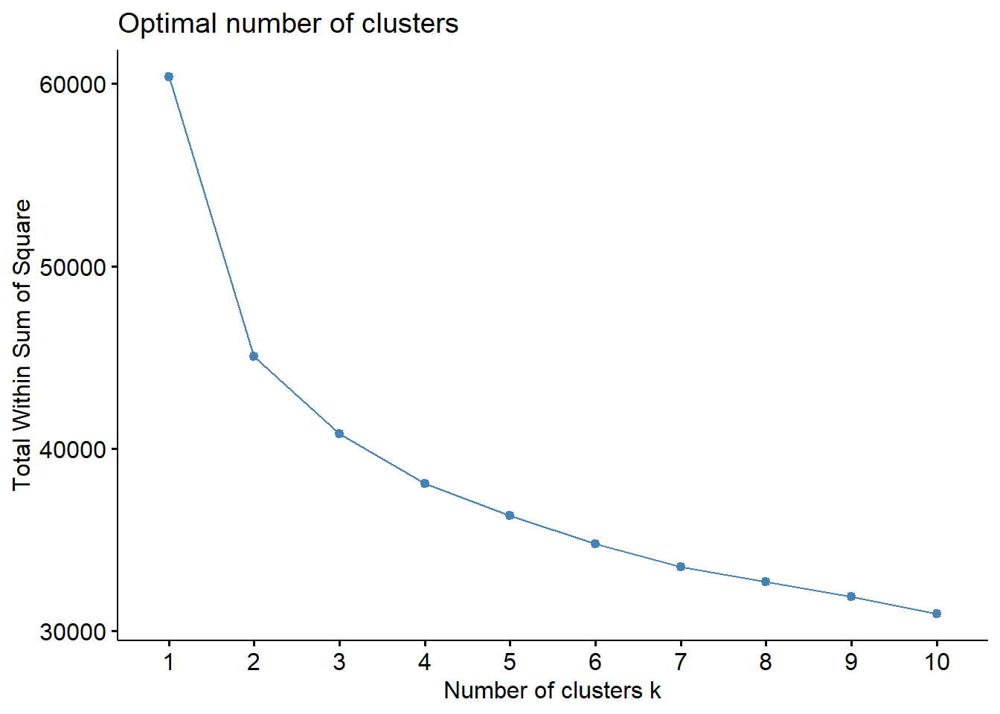
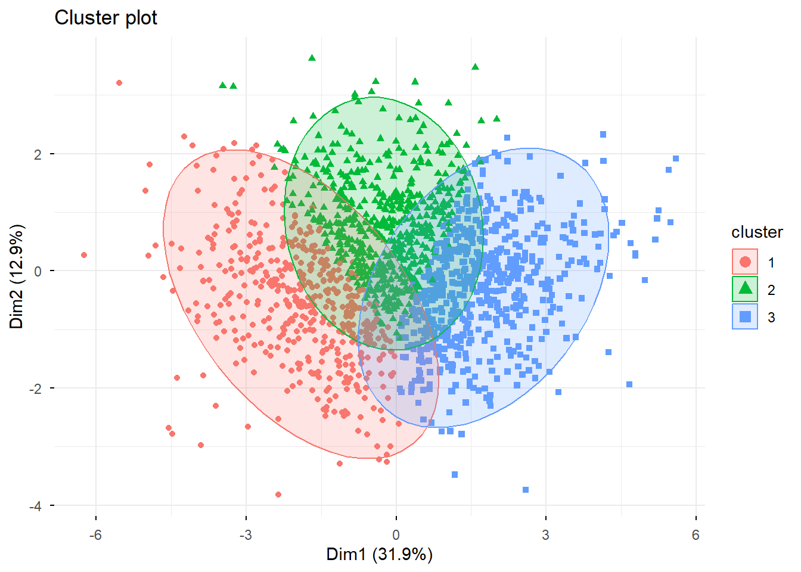

| Dimensión | Enfoque / Descripción | Indicadores y Comportamientos Específicos |
|---|---|---|
| Compra Consciente / Material | Privilegia productos con atributos sociales o ambientales y el apoyo a economías locales. | • Adquirir productos con etiqueta de "comercio justo". • Preferir empresas con responsabilidad social (RSE). • Optar por productores y distribuidores locales (almacenes, ferias). • Prácticas de boycott (dejar de comprar) o buycott (comprar ex profeso por ética). |
| Estilo de Vida Ahorrativo / Eficiencia | Prácticas domésticas orientadas al ahorro de recursos que benefician tanto al entorno como a la economía del hogar. | • Apagar luces en ambientes desocupados. • Cerrar la llave del agua al lavarse los dientes. • Desenchufar aparatos eléctricos en desuso. • Esperar que los alimentos se enfríen antes de refrigerar. |
| Compra Reflexiva / Reflexión | Posición activa del consumidor para informarse sobre la trazabilidad y efectos de su compra. | • Planificar la compra de alimentos y vestuario para evitar la impulsividad. • Leer etiquetas antes de decidir la compra. • Informarse sobre el origen de los productos y sus impactos socioambientales. • Reflexionar sobre si el consumo es una necesidad real. |
| Estilo de Vida Sustentable / Gestión de Residuos | Acciones vinculadas al mantenimiento de un estilo de vida que minimiza los desechos y la degradación. | • Separar la basura para reciclaje. • Reutilizar productos, envases y papel de impresión. • Reparar ropa o electrodomésticos en lugar de reemplazarlos. • Comprar productos hechos con material reciclado u orgánicos. |
| Agencia Ciudadana / Colectiva | Uso del consumo como herramienta de presión política y movilización social. | • Divulgar información y valores del consumo consciente a otros. • Cobrar a los políticos propuestas que viabilicen estas prácticas. • Realizar reclamos o denuncias (ej. Sernac) cuando el producto no satisface o es poco ético. • Participar en asociaciones de consumidores o cooperativas. |
Análisis de correspondencias múltiples (ACM) para tipologías de consumo.
El presente documento se centra en la formulaicon de un analisis de cluster que tiene como insumo un analisis de correspondencias multiples (ACM). Para identificar las dimensiones del consumo de interes, realizo una variación de la propuesta de medición del instituto AKATU en Preud’homme et al. (2021), que contempla cuatro dimensiones y trece comportamientos.
Para la adaptacion de la propuesta de AKATU, se consideraron las siguientes variables de la “encuesta sociedad de consumo”.
| variable | label | n | media | sd | minimo | maximo |
|---|---|---|---|---|---|---|
| akatu_1 | P1 Planificar compras | 1623 | 6.88 | 1.91 | 2 | 10 |
| akatu_2 | P2 Evaluar impactos | 1623 | 6.06 | 2.01 | 2 | 10 |
| akatu_3 | P3 Consumir solo lo necesario | 1623 | 2.89 | 1.14 | 1 | 5 |
| akatu_4 | P4 Reutilizar/Reparar | 1623 | 6.25 | 1.93 | 2 | 10 |
| akatu_5 | P5 Separar basura/Reciclar | 1623 | 2.84 | 1.37 | 1 | 5 |
| akatu_6 | P6 Uso consciente del credito | 1623 | 6.10 | 1.77 | 2 | 10 |
| akatu_7 | P7 Valorar RSE | 1623 | 8.49 | 2.81 | 3 | 15 |
| akatu_9 | P9 Feedback y mejora | 1623 | 7.85 | 2.42 | 3 | 15 |
| akatu_10 | P10 Divulgar consumo consciente | 1623 | 4.26 | 1.90 | 2 | 10 |
| akatu_11 | P12 Reflexion sobre valores | 1623 | 4.80 | 1.45 | 2 | 10 |
| AKATU_TOTAL | Indice AKATU total | 1623 | 56.41 | 10.25 | 25 | 94 |
El procedimiento para categorizar el consumo consistio en realizar un clustering por K-medias sobre los indices construidos para cada una de las dimensiones propuestas por AKATU presentes en la encuesta. Para esto, se determino el numero optimo de clusters mediante el metodo del codo, y se opto por la solucion de tres clusters.
Posteriormente, se realizo un analisis de correspondencias multiples (ACM) para clusterizar los perfiles resultantes en conjunto con otras variables.


Los cluster resultantes fueron clasificados como “Indiferentes”, “Conscientes”, y “Iniciantes”, en base a las medias de cada variable por cluster.
[1] "Varianza explicada: 0.800523276109641"| cluster_akatu | n | porcentaje | akatu_1 | akatu_2 | akatu_3 | akatu_4 | akatu_5 | akatu_6 | akatu_7 | akatu_9 | akatu_10 | akatu_11 | varianza_explicada |
|---|---|---|---|---|---|---|---|---|---|---|---|---|---|
| indiferente | 600 | 36.97 | 5.88 | 4.48 | 2.87 | 5.24 | 2.04 | 5.46 | 6.44 | 6.18 | 2.93 | 4.65 | 0.801 |
| iniciante pragmatico | 547 | 33.70 | 6.74 | 6.40 | 3.34 | 6.11 | 2.86 | 5.89 | 9.10 | 8.32 | 5.09 | 5.54 | 0.801 |
| consciente activo | 476 | 29.33 | 8.28 | 7.65 | 2.41 | 7.68 | 3.81 | 7.17 | 10.36 | 9.41 | 4.97 | 4.13 | 0.801 |
Posteriormente, se realizo un analisis de correspondencias multiples (ACM). En el análisis de correspondencias múltiples se incluyeron variables que combinan perfil de consumo, condiciones socioeconómicas y disposiciones actitudinales. Específicamente, se consideró la pertenencia a la tipología de consumo (clusters AKATU), la situación financiera del hogar, el nivel socioeconómico, el sexo y la edad, junto con indicadores de posicionamiento politico individual. Además, se incorporaron variables actitudinales y de percepción del módulo M, incluyendo tres ítems específicos orientados a prácticas y orientaciones de consumo. Esta selección permitió capturar simultáneamente diferencias estructurales (posición social y demográfica) y diferencias culturales/valóricas asociadas a los estilos de consumo.
Reporte a partir de los resultados del ACM
El Análisis de Correspondencias Múltiples (ACM) realizado sobre los datos de la encuesta revela una estructura relacional donde la ética del consumo se encuentra supeditada a la posición socioeconómica y la estabilidad financiera del individuo, capturando una varianza acumulada del 12.63% en sus primeras tres dimensiones. La Dimensión 1 se configura como un eje de capital cultural y económico, definido primordialmente por el NSE (0.488) y el Nivel Educativo (0.365), donde se observa una clara segregación: mientras que el perfil de “Consciente Activo” y los individuos en situación de “No Déficit” (ahorro o equilibrio) se proyectan positivamente con valores de v-test significativos de 5.28 y 8.92 respectivamente, el consumidor “Indiferente” y aquel en situación de “Déficit” se ubican en el polo opuesto (v-test de -7.42 y -5.97). Este hallazgo sugiere que la conciencia en el consumo no es solo una elección actitudinal, sino que está condicionada por la posesión de recursos que permitan trascender la urgencia material del gasto inmediato. Por su parte, la Dimensión 2 profundiza en la brecha de estabilidad financiera y gestión de la deuda, encontrándose fuertemente anclada por la variable de uso del dinero disponible (C2: 0.304) y la percepción de endeudamiento (M15: 0.192). En este plano, destaca el contraste estadístico extremo de quienes declaran “No tener deudas ahora ni hace 3 años”, quienes presentan el v-test más alto del modelo (17.04), posicionándose como el polo opuesto de quienes viven en situación de “Déficit” (v-test: -14.09). Esta polarización confirma que la solvencia actúa como un habilitador de la conciencia ciudadana, mientras que el endeudamiento creciente empuja a los sujetos hacia la indiferencia o al consumo no consciente, priorizando el impacto individual de corto plazo sobre la responsabilidad social de largo plazo. Finalmente, la Dimensión 3 introduce un componente generacional, siendo la Edad (0.439) la variable con mayor poder explicativo en este eje. Aquí se valida que los consumidores de mayor edad poseen niveles de conciencia más robustos (v-test: 4.39 para iniciantes pragmáticos), mientras que el perfil “Indiferente” muestra un rechazo estadístico significativo en este eje (v-test: -7.86), asociándose a grupos más jóvenes y con mayores dificultades de ahorro. En conjunto, el modelo permite concluir que el consumo consciente es un atributo de clase, donde el acceso a la categoría de “Consciente Activo” está restringido a sectores con alto capital educativo y baja presión de deuda, mientras que la “Indiferencia” predomina en sujetos con restricciones presupuestarias y menor instrucción
Referencias
Preud’homme, G., Duarte, K., Dalleau, K., Lacomblez, C., Bresso, E., Smaïl-Tabbone, M., Couceiro, M., Devignes, M.-D., Kobayashi, M., Huttin, O., Ferreira, J. P., Zannad, F., Rossignol, P., & Girerd, N. (2021). Head-to-Head Comparison of Clustering Methods for Heterogeneous Data: A Simulation-Driven Benchmark. Scientific Reports, 11(1), 4202. https://doi.org/10.1038/s41598-021-83340-8